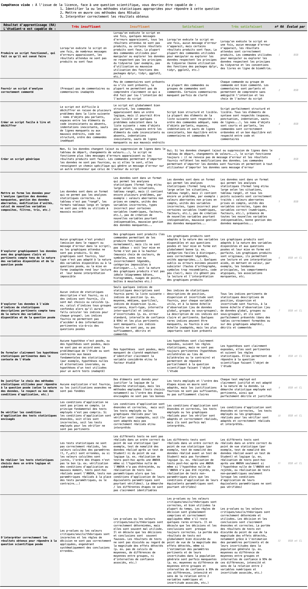

Introduction
Objectifs
Ce livre rassemble les contenus, exemples et exercices des travaux pratiques qui illustrent les cours magistraux (CM) et les travaux dirigés (TD) de Biométrie, dans l’EC Outils pour l’étude et la compréhension du vivant 4 du semestre 5 de la licence Sciences de la Vie de La Rochelle Université. Ces travaux pratiques sont assurés par Benoît Simon-Bouhet. Les cinq chapitres de cet ouvrage sont consacrés aux tests statistiques de comparaison de moyennes et de proportions, aux tests de qualité de l’ajustement, ainsi qu’à la démarche d’analyse des données à mettre en place avant leur utilisation.
À l’issue du travail sur les cinq chapitres de ce livre, vous devriez être capables de faire les choses suivantes dans RStudio :
- Mettre en forme des tableaux de données : renommer des variables, en créer de nouvelles, modifier des variables existantes, filtrer des lignes, sélectionner des colonnes, etc. (vu au semestre 3)
- Explorer des jeux de données en produisant des graphiques appropriés selon la nature des variables disponibles, leur nombre et l’objectif recherché (vu au semestre 3)
- Explorer des jeux de données en produisant des résumés statistiques de variables de différentes natures (numériques continues ou catégorielles) et pour différentes modalités de facteurs d’intérêt (vu au semestre 4)
- Calculer des indices de position (moyennes, médianes…), de dispersion (écarts-types, variances, IQR…) et d’incertitude (erreurs standard, intervalles de confiance…) pour plusieurs sous-groupes de vos jeux de données, et les représenter sur des graphiques adaptés (vu au semestre 4)
- Choisir et formuler des hypothèses adaptées à la question scientifique posée (hypothèses bilatérales ou unilatérales)
- Choisir les tests statistiques permettant de répondre à une question scientifique précise selon la nature de la question posée et la nature des variables à disposition
- Réaliser les tests usuels de comparaison de moyennes (\(t\) de Student à 1 ou 2 échantillons, appariés ou indépendants…)
- Vérifier les conditions d’application des tests (graphiquement et avec des tests appropriés tels que les tests de Shapiro-Wilk et de Levene), et le cas échéant, choisir une alternative adaptée (test de Welch, de Wilcoxon…)
- Estimer une proportion et son intervalle de confiance
- Comparer une proportion à une valeur théorique et comparer les proportions de deux groupes indépendants
- Construire et interpréter une table de contingence, examiner les effectifs attendus et choisir un test adapté
- Comparer une distribution d’effectifs observés à une distribution attendue sous un modèle théorique, avec un test du \(\chi^2\) de qualité de l’ajustement
- Distinguer un test du \(\chi^2\) d’indépendance d’un test du \(\chi^2\) de qualité de l’ajustement
- Interpréter correctement les résultats des tests pour répondre aux questions scientifiques posées
Pré-requis
Pour atteindre les objectifs fixés ici, et compte tenu du volume horaire restreint qui est consacré aux TP de Biométrie au S5, je suppose que vous possédez un certain nombre de pré-requis. En particulier, vous devriez avoir à ce stade une bonne connaissance de l’interface du logiciel RStudio, et vous devriez être capables :
- de créer un
Rprojectet un script d’analyse dansRStudio - d’importer des jeux de données issus de tableurs dans
RStudio - d’effectuer des manipulations de données simples (sélectionner des variables, trier des colonnes, filtrer des lignes, créer de nouvelles variables, etc.)
- de produire des graphiques de qualité, adaptés à la fois aux variables dont vous disposez et aux questions auxquelles vous souhaitez répondre
- de réaliser une exploration statistique de vos données en calculant des indices de position, de dispersion et d’incertitude pour plusieurs sous-groupes de vos données
Mettez-vous à niveau de toute urgence en lisant attentivement :
Vous aurez de toutes façons besoin de vous référer à ces 2 documents régulièrement au cours de ces TP. Donc gardez-les à portée de main et apprenez à naviguer rapidement dans leurs chapitres et sous-chapitres pour retrouver facilement les informations dont vous avez besoin.
Organisation
Volume de travail
Les travaux pratiques de biométrie auront lieu entre le 14 septembre et le 9 décembre 2026. Durant cette période, vous n’aurez jamais plus d’un créneau d’1h30 de TP par semaine pour chaque groupe, et deux séances consécutives sont souvent espacées de deux semaines ou plus. Vous devrez donc prendre l’habitude de prévoir, dans vos emplois du temps, des plages de travail personnel régulières afin de ne pas oublier ce que vous avez appris entre deux séances de TP.
Les séances de TP ont lieu soit en salle MSI 217, soit dans les salles du Pôle Communication Multimédia Réseau (PCMR), dans les salles Sc1 à Sc7 ou en salle Info Trans.
Au total, chaque groupe aura 9 séances de TP de 1h30 au semestre 5. Cinq de ces séances, soit 7h30, seront assurées par mes soins (Benoît Simon-Bouhet) et porteront sur les contenus de ce livre. Les quatre autres séances seront assurées par Florian Orgeret et pour lesquelles un autre livre en ligne sera disponible. Pour atteindre les objectifs présentés ici, vous devrez prévoir du travail personnel régulier entre les 5 séances de TP décrites ici. Vos prédécesseurs consacraient en moyenne entre une et trois heures de travail personnel pour chaque séance de TP prévue dans leur emploi du temps. Comme pour les semestres précédents, Ce travail personnel et régulier est essentiel pour progresser dans cette matière. J’insiste sur l’importance de faire l’effort dès maintenant : vous allez en effet avoir des enseignements qui reposent sur l’utilisation de ces logiciels jusqu’à la fin du S6 (y compris pendant vos stages et, très vraisemblablement, dans vos futurs masters également). C’est donc maintenant qu’il faut acquérir des automatismes, cela vous fera gagner énormément de temps ensuite.
Attention, mes séances et celles de Florian Orgeret sont intercalées au cours du semestre. Pour les TP de l’EC outils, deux séances consécutives dans votre emploi du temps ne correspondent donc pas nécessairement au même intervenant ni au même travail à préparer. Avant chaque TP, vérifiez le nom de l’intervenant, la salle et les consignes de préparation associées à la séance.
Soyez vigilants lorsque vous consultez vos emplois du temps : les deux intervenants utilisent des supports et des modalités pédagogiques différents. Les consignes de ce livre concernent uniquement mes séances. Pour celles de Florian Orgeret, consultez les documents et les consignes qu’il vous fournit.
Modalités d’enseignement
Pour suivre cet enseignement, vous pourrez utiliser les ordinateurs de l’université, mais je ne peux que vous encourager à utiliser vos propres ordinateurs, sous Windows, Linux ou MacOS. Lors de vos futurs stages et pour rédiger vos comptes rendus de TP, vous utiliserez le plus souvent vos propres ordinateurs, autant prendre dès maintenant de bonnes habitudes en installant les logiciels dont vous aurez besoin tout au long de votre licence. Si vous n’avez pas suivi les cours de biométrie de L2 et que les logiciels R et RStudio ne sont pas encore installés sur vos ordinateurs, suivez la procédure décrite ici. Si vous ne possédez pas d’ordinateur, manifestez-vous rapidement auprès de moi car des solutions existent (prêt par l’université, travail sur tablette ou chromebook via Posit cloud…).
L’essentiel du contenu de ce livre peut être abordé en autonomie, à distance, grâce aux explications et exercices proposés ici, aux ressources mises à disposition sur Moodle et à votre ordinateur personnel. Les cinq séances que j’assure fonctionnent comme des permanences d’accompagnement : votre présence en salle est facultative, mais le travail demandé est obligatoire.
Plus que des séances de TP classiques, considérez plutôt qu’il s’agit de permanences non-obligatoires : si vous pensez avoir besoin d’aide, si vous avez des points de blocage ou des questions sur le contenu de ce document ou sur les exercices demandés, alors venez poser vos questions lors des séances de TP. Vous ne serez d’ailleurs pas tenus de rester pendant 1h30 : si vous obtenez une réponse en 10 minutes et que vous préférez travailler ailleurs, vous serez libres de repartir. De même, si vous n’avez pas de difficulté de compréhension, que vous n’avez pas de problème avec les exercices de ce livre en ligne ni avec les quiz Moodle, votre présence n’est pas requise. Si vous souhaitez malgré tout venir en salle de TP, pas de problème, vous y serez toujours les bienvenus.
Ce fonctionnement très souple a de nombreux avantages :
- vous vous organisez comme vous le souhaitez
- vous ne venez que lorsque vous en avez vraiment besoin
- celles et ceux qui se déplacent reçoivent une aide personnalisée
- vous travaillez sur vos ordinateurs
- les effectifs étant réduits, c’est aussi plus confortable pour moi !
Toutefois, pour que cette organisation fonctionne, cela demande de la rigueur de votre part, en particulier sur la régularité du travail que vous devez fournir. Si la présence en salle de TP n’est pas requise, le travail demandé est bel et bien obligatoire ! Si vous venez en salle de TP sans avoir travaillé en amont, vous ne tirerez pas grand-chose des séances puisque vous passerez votre temps à lire et suivre ce livre en ligne, choses que vous pouvez très bien faire chez vous. Votre temps, celui de vos collègues et le mien sera bien mieux utilisé si vous avez travaillé en amont des séances. Aussi, n’attendez pas plusieurs semaines pour commencer : prévoyez des plages régulières de travail personnel dès le début du semestre, y compris les semaines où aucune séance n’est programmée avec moi.
Je vous laisse donc une grande liberté d’organisation. À vous d’en tirer le maximum et de faire preuve du sérieux nécessaire. Le rythme auquel vous devriez avancer est présenté dans la partie suivante “Progression conseillée” ci-dessous.
Le fonctionnement en permanence facultative concerne uniquement mes séances. La présence aux séances de Florian Orgeret est obligatoire, sauf indications contraires de sa part. Ces séances étant intercalées dans vos emplois du temps, vérifiez systématiquement quel intervenant assure votre prochain TP et préparez le travail correspondant.
Progression conseillée
Si vous avez suivi le document de prise en main de R et RStudio lors de l’EC de biométrie du semestre 3 de la licence SV de La Rochelle, vous savez que pour apprendre à utiliser ces logiciels, il faut faire les choses soi-même, ne pas avoir peur des messages d’erreurs (il faut d’ailleurs apprendre à les déchiffrer pour comprendre d’où viennent les problèmes), essayer maintes fois, se tromper beaucoup, recommencer, et surtout, ne pas se décourager. J’utilise ce logiciel presque quotidiennement depuis près de 20 ans et à chaque session de travail, je rencontre des messages d’erreur. Avec suffisamment d’habitude, on apprend à les déchiffrer et on corrige les problèmes en quelques secondes. Ce livre est conçu pour vous faciliter la tâche, mais ne vous y trompez pas, vous rencontrerez des difficultés, et c’est normal. C’est le prix à payer pour profiter de la puissance du meilleur logiciel permettant d’analyser des données, de produire des graphiques de qualité et de réaliser toutes les statistiques dont vous aurez besoin d’ici la fin de vos études et au-delà.
Pour que cet apprentissage soit le moins problématique possible, prenez les choses dans l’ordre : lisez successivement les chapitres 1 à 5 et faites les exercices d’application au fur et à mesure de votre lecture.
La progression ci-dessous concerne uniquement les cinq séances que j’assure, à raison d’une séance par chapitre. La “troisième séance”, par exemple, désigne votre troisième séance avec moi, même si vous avez entre-temps suivi des séances avec Florian Orgeret. Vérifiez donc le nom de l’intervenant dans votre emploi du temps pour identifier la séance et le chapitre correspondants.
Séance 1 — Comparer une moyenne à une valeur théorique
La première séance est consacrée au chapitre 1 Comparaison de la moyenne d’une population à une valeur théorique. À partir de l’exemple des températures corporelles, vous devrez mettre en œuvre toutes les étapes d’une analyse de données : importer et mettre en forme les données, les examiner à l’aide de statistiques descriptives (1.4 Exploration statistique des données) et de graphiques adaptés (1.5 Exploration graphique des données), vérifier les conditions d’application du test (1.6.1 Conditions d’application), puis réaliser le test de Student à un échantillon ou son alternative non paramétrique de Wilcoxon.
L’objectif est de comprendre la démarche autant que de maîtriser les commandes de RStudio. Vous devrez être capables de formuler les hypothèses, d’interpréter la \(p\)-value et de rédiger une conclusion répondant à la question posée. Vous devrez également distinguer l’estimation et son incertitude du résultat d’un test, et comprendre les notions d’erreurs de type I et II et de puissance statistique (1.8 Les notions d’erreur et de puissance statistique). L’exercice d’application (1.10 Exercice d’application) vous permettra de reproduire cette démarche sur un nouveau jeu de données.
Séance 2 — Comparer des données appariées
La deuxième séance est consacrée au chapitre 2 Comparaison de moyennes : deux échantillons appariés. À partir de l’exemple sur la testostérone et l’immunocompétence, vous apprendrez à reconnaître des observations appariées, à organiser les données aux formats large et long et à représenter graphiquement le lien entre les deux mesures réalisées sur chaque individu.
Vous devrez comprendre pourquoi l’analyse porte sur les différences individuelles et pourquoi la condition de normalité doit être vérifiée sur ces différences (2.6.2 Conditions d’application). Vous réaliserez le test de Student sur données appariées et étudierez son alternative non paramétrique. Vous devrez être capables d’interpréter les résultats en tenant compte du sens dans lequel les différences sont calculées, puis d’appliquer cette démarche à la comparaison des températures du corps et du cerveau des autruches.
Séance 3 — Comparer deux échantillons indépendants
La troisième séance est consacrée au chapitre 3 Comparaison de moyennes : deux échantillons indépendants. À partir de l’exemple des lézards cornus, vous devrez comparer deux groupes indépendants, en examinant séparément les données de chaque groupe et en estimant les moyennes et leur incertitude.
Vous apprendrez à vérifier les conditions d’application des tests et à comprendre leur robustesse (3.6.1 Conditions d’application), puis à choisir entre le test de Student, le test de Welch et le test de Wilcoxon sur la somme des rangs. Vous devrez interpréter le résultat du test et la différence entre les groupes à l’aide des estimations et des intervalles de confiance. Cette séance permettra également de distinguer tests bilatéraux et unilatéraux (3.10 Tests bilatéraux et unilatéraux), de justifier le choix d’une hypothèse unilatérale et de comprendre le rôle de l’ordre des groupes dans la syntaxe du test.
Séance 4 — Estimer et comparer des proportions
La quatrième séance est consacrée au chapitre 4 Comparaison de proportions. À partir des données sur les calmars, vous devrez passer des observations individuelles aux effectifs et aux proportions, comprendre en quoi une proportion est une moyenne et estimer son incertitude à l’aide d’un intervalle de confiance.
Vous apprendrez à comparer une proportion à une valeur théorique avec le test binomial exact (4.4 Cas 1 : comparer une proportion observée à une proportion théorique), puis à comparer les proportions de deux groupes indépendants (4.5 Cas 2 : comparer deux proportions indépendantes). Vous devrez également construire et interpréter une table de contingence, faire le lien entre comparaison de proportions et test du \(\chi^2\) d’indépendance, examiner les effectifs attendus et comprendre dans quelles situations utiliser le test exact de Fisher (4.5.7 Le cas des petits effectifs : test exact de Fisher). L’objectif est de savoir choisir le test adapté et de rédiger une conclusion fondée sur les proportions estimées, leur incertitude et les résultats du test.
Séance 5 — Tester la qualité de l’ajustement
La cinquième et dernière séance est consacrée au chapitre 5 Qualité de l’ajustement. Vous étendrez la démarche de comparaison de proportions à une distribution entière d’effectifs. À partir de l’exemple des poissons récifaux et des phases lunaires, vous devrez définir un modèle proportionnel (5.4 Le modèle proportionnel), calculer les probabilités et les effectifs attendus sous l’hypothèse nulle, puis réaliser un test du \(\chi^2\) de qualité de l’ajustement (5.7 Le test du chi-deux de qualité de l’ajustement).
Vous apprendrez à examiner les conditions d’application, les contributions des différentes catégories au \(\chi^2\) et la magnitude des écarts observés. Vous étudierez également l’ajustement à une loi binomiale (5.12 Ajustement à une loi binomiale) et à une loi de Poisson (5.13 Ajustement à une loi de Poisson), ainsi que la prise en compte des paramètres estimés dans le calcul des degrés de liberté (?imp-gof-df). Vous devrez être capables de distinguer un test de qualité de l’ajustement d’un test d’indépendance et de formuler une conclusion qui porte précisément sur le modèle théorique testé.
Quelques mots sur les IA génératives
J’attire votre attention sur l’utilisation des IA génératives. La plupart des modèles conversationnels (Large Language Models, LLMs) tels que ChatGPT, Gemini, Claude… sont très bons pour générer du code. Je vous mets néanmoins en garde : si vous ne comprenez pas ce qui est expliqué dans ces pages, vous ne pourrez pas juger de la pertinence du code que les IA pourraient vous fournir. Vous pouvez donc vous faire aider par l’IA pour corriger votre code par exemple, ou pour obtenir des suggestions, mais il est de votre responsabilité de comprendre ce que vous faites et ce que l’IA fait pour vous ! Non seulement c’est ce qui vous fera gagner du temps à terme (acceptez de passer du temps maintenant, pour comprendre les notions et concepts, afin de gagner beaucoup de temps plus tard), mais surtout, c’est ce qui vous évitera de faire beaucoup d’erreurs ! Encore cette année, la plupart de nos étudiants de M1 ont utilisé l’IA pour calculer un indice statistique un peu exotique. Presque aucun ne s’est rendu compte que le code produit par l’IA ne faisait pas ce qui était demandé. Par conséquent, toute une partie de leur compte rendu de TP n’avait aucun sens et ils ont donc été lourdement pénalisés à cause de leur confiance aveugle en l’IA. Produire soi-même un code, et demander l’aide de l’IA pour corriger un bug ou demander des améliorations précises, c’est très différent de ne produire aucun code et de demander à l’IA de tout faire. Dans un cas, on fait travailler son cerveau, et l’IA joue le rôle d’un partenaire qui fournit des suggestions souvent pertinentes. Dans l’autre, le cerveau reste au repos, on n’apprend rien, et donc, on perd son temps…
Vous devez donc faire preuve d’esprit critique vis-à-vis de ces outils, qui peuvent être très utiles, mais qui demandent la plus grande vigilance et qui se trompent régulièrement. Or, pour faire preuve d’esprit critique, vous devez être en mesure de comprendre le code fourni par ces IA. Si ça n’est pas le cas, reprenez les explications de ce livre en ligne : tout ce dont vous avez besoin s’y trouve noir sur blanc.
Par ailleurs, si vous utilisez l’IA pour générer du code, vous devez l’indiquer clairement, et ça doit rester relativement rare. Quelle(s) partie(s) de vos scripts sont réellement de vous, et quelles parties ont été générées par une IA ? À votre niveau, je vous assure qu’il m’est très facile de savoir si du code a été produit par une IA ou par vous. Si vous n’indiquez pas que du code que vous intégrez à vos scripts n’est pas de vous, c’est de la fraude qui peut faire l’objet de sanctions importantes (passage devant le conseil de discipline de l’établissement par exemple). Donc encore une fois, vous pouvez utiliser ces outils, mais à la double condition que (i) ça soit fait à bon escient (assurez-vous que ce qui est produit par l’IA est pertinent, que ça a du sens, et que ça reste rare), et (ii), vous indiquiez clairement dans vos scripts quelles lignes ont été produites à l’aide d’une IA (et laquelle).
Enfin, je me permets une dernière mise en garde. De plus en plus d’études démontrent un effet négatif de l’utilisation excessive des LLMs sur la qualité des apprentissages chez les étudiant·es. Par exemple, cet article (Stadler et al. 2024) montre que
Bien que les LLM puissent réduire la charge cognitive associée à la collecte d’informations au cours d’une tâche d’apprentissage, ils ne favorisent pas un engagement profond avec le contenu étudié, pourtant nécessaire à un apprentissage durable et de qualité.
De même, Kosmyna et al. (2025) ont étudié, par électro-encéphalogramme, les performances cognitives de 3 groupes de participants lors d’exercices de productions écrites (rédaction de synthèses scientifiques). Un groupe avait le droit d’utiliser les IA, un groupe était limité à l’utilisation de Google, un autre groupe n’avait aucun accès à ces outils numériques. Globalement, les participants du groupe LLM sont de loin ceux qui obtiennent les moins bons résultats, qui comprennent et retiennent le moins bien ce qu’ils ont fait. Ceux qui n’avaient droit à aucun outil sont ceux qui ont le plus appris car ils ont dû s’investir pleinement dans l’exercice. En particulier, les auteurs soulignent ceci :
Les utilisateurs d’un LLM ont eu du mal à citer correctement leurs propres travaux. Si les LLM offrent une facilité immédiate, nos résultats mettent en évidence des coûts cognitifs potentiels. Sur une période de quatre mois, les utilisateurs d’un LLM ont systématiquement enregistré des résultats inférieurs aux niveaux neuronal, linguistique et comportemental.
Bref, ces outils sont puissants, ils sont parfois très utiles (et ils vont continuer de s’améliorer), mais ils doivent être utilisés intelligemment pour éviter des conséquences très contre-productives pour vos apprentissages. Là encore, c’est à vous de faire preuve de maturité pour en tirer le meilleur !
Évaluation(s)
L’évaluation de la partie “Biométrie” de l’EC “Outils pour l’étude et la compréhension du vivant” aura lieu sous la forme d’un examen terminal sur table. Puisque vous n’aurez pas accès à votre ordinateur, je ne vous demanderai pas d’écrire des lignes de codes. Toutefois, cette évaluation portera sur l’ensemble des notions et concepts abordés dans ce livre et dans les CM et TD de biométrie depuis le début du semestre. Les pré-requis décris plus haut sont censés être maîtrisés, et vous pourrez donc aussi être interrogés sur des notions abordées lors des semestres précédents.
Pour vous aider à comprendre ce qui est attendu, je vous fournis ci-dessous la grille critériée dont je me servirai pour évaluer le travail que vous devrez produire au semestre 6, dans le cadre de l’évaluation sommative conjointe entre biométrie et stratégie d’échantillonnage. Tous les items de cette grille ne seront évidemment pas évalués lors de l’épreuve terminale de la fin du semestre 5, mais certains le seront. Je ne peux donc que vous encourager à lire attentivement les critères d’évaluation ci-dessous et à tenter de vous les approprier. Les séances de TP qui viennent doivent vous permettre de vous entraîner à produire des scripts de qualité, et à y intégrer des analyses pertinentes et correctement interprétées.

Licence
Ce livre en ligne est sous licence Creative Commons (CC BY-NC-ND 4.0)

Vous êtes autorisé à partager, copier, distribuer et communiquer ce matériel par tous moyens et sous tous formats, tant que les conditions suivantes sont respectées :
- Attribution : vous devez créditer ce travail (donc citer son auteur), fournir un lien vers ce livre en ligne, intégrer un lien vers la licence Creative Commons et indiquer si des modifications du contenu original ont été effectuées. Vous devez indiquer ces informations par tous les moyens raisonnables, sans toutefois suggérer que l’auteur vous soutient ou soutient la façon dont vous avez utilisé son travail.
- Pas d’Utilisation Commerciale : vous n’êtes pas autorisé à faire un usage commercial de cet ouvrage, ni de tout ou partie du matériel le composant. Cela comprend évidemment la diffusion sur des plateformes de partage telles que studocu.com qui tirent profit d’œuvres dont elles ne sont pas propriétaires, souvent à l’insu des auteurs.
- Pas de modifications : dans le cas où vous effectuez un remix, que vous transformez, ou créez à partir du matériel composant l’ouvrage original, vous n’êtes pas autorisé à distribuer ou mettre à disposition l’ouvrage modifié.
- Pas de restrictions complémentaires : vous n’êtes pas autorisé à appliquer des conditions légales ou des mesures techniques qui restreindraient légalement autrui à utiliser cet ouvrage dans les conditions décrites par la licence.
Comment communiquer
Lors de votre travail sur les chapitres et exercices de ce livre, vous pouvez me contacter directement par email. Joignez, si nécessaire, votre code, les messages d’erreur obtenus et des captures d’écran permettant de comprendre votre difficulté.
Sachez toutefois qu’afin d’éviter de recevoir les mêmes questions de nombreuses fois, mes réponses pourront être adressées à l’ensemble de la promotion. Ainsi, tout le monde en profite, et tout le monde progresse en même temps.
Ce document est fait pour vous permettre d’avancer en autonomie et vous ne devriez normalement pas avoir beaucoup besoin de moi si votre lecture est attentive. L’expérience montre en effet que la plupart du temps, il suffit de lire correctement les paragraphes précédents et/ou suivants pour obtenir la réponse à ses questions. Lors des séances de TP au format “permanence”, j’essaie de rester disponible par mail, mais je réponds évidemment en priorité à celles et ceux qui sont physiquement présents en salle. Cela signifie néanmoins que même si votre groupe n’est pas en TP, vos questions ont des chances d’être lues et de recevoir des réponses lorsque j’assure une permanence pour un autre groupe. Vous pouvez d’ailleurs vous-même envoyer vos questions directement à toute la promotion : vous aurez ainsi plus de chances que quelqu’un vous réponde rapidement.